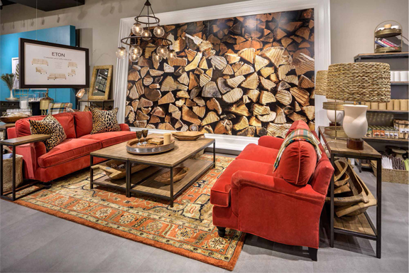
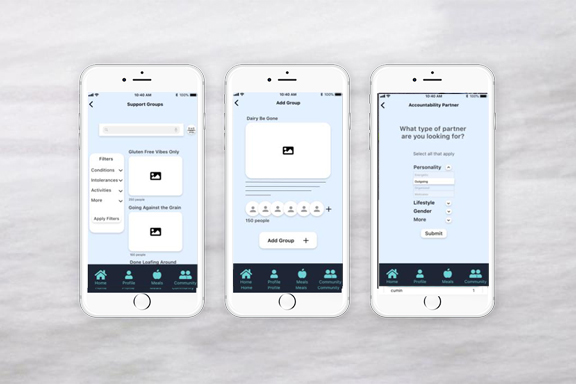

Ballard Designs – What happens when a 25 year old catalog brand decides to open stores while established brands are shuttering theirs?

In store seasonal fall floorset
Store front with seasonal focal
Conscious Medicine – How does a doctor encourage her patients to follow their prescribed diet to reach their wellness goal?
Make it simple with preplanned menus that can be quickly altered.

Surround them with supportive community.